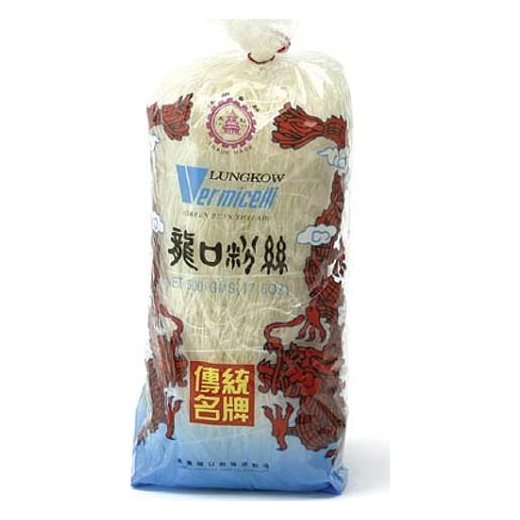
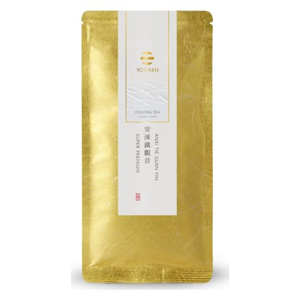
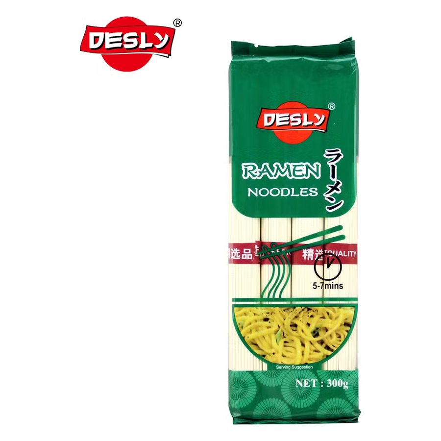
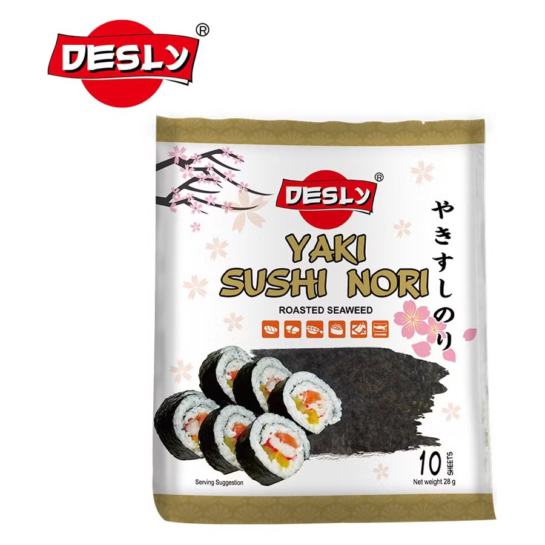
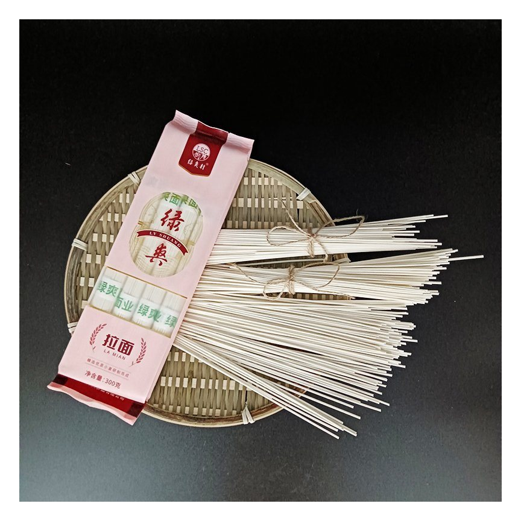

Home / Asian groceries & snacks / Sichuan pepper (huajiao), red, whole, bag 100 g

Illustration similar – shows the product type.
Asian groceries & snacks
Sichuan pepper (huajiao), red, whole, bag 100 g
Dried red Sichuan pepper husks (huajiao), whole: the tingling, numbing spice for mala dishes, chili oil and seasoning blends.
Sichuan pepper (huajiao) consists of the dried fruit husks of Zanthoxylum species and is not a pepper in the botanical sense: it delivers the citrusy, floral seasoning and the tingling, numbing mouthfeel (ma) that defines Sichuan cuisine. Key points for the EU market are residue analytics (pesticides, ethylene oxide), mycotoxins and clean origin and allergen labelling.
Technical data
| Designation | Red Sichuan pepper fruit (huajiao, Fructus Zanthoxyli), whole |
|---|---|
| Form | Dried husks, whole, not crushed |
| Moisture | max.; 10 % |
| Microbiology | Steam sterilisation, total plate count <100,000 cfu/g |
| Purity | 100 % Sichuan pepper, GMO-free, no colour dyes, metal detector |
| Pack | 25 kg kraft paper bag with PE inner bag |
| Customs tariff number (HS) | 09109991 |
EU standards and regulations
Reg. (EU) 1169/2011Food information to consumers: ingredient list, origin, best-before date, trace allergen notice, responsible operatorReg. (EU) 2023/915Maximum levels for contaminants (mycotoxins such as aflatoxins and ochratoxin A, other contaminants in spices)Reg. (EG) 396/2005Maximum residue levels for pesticides (incl.; ethylene oxide)Reg. (EG) 852/2004Food hygiene, HACCP procedures, traceabilityDVO (EU) 2019/1793VerpackGGerman Packaging Act: LUCID registration and system participation for the 100 g bag
Goes well with

Chili crisp (crunchy chili oil), jar 210 gCrunchy chili oil with onion and fermented soybeans in a 210 g jar, vegetarian, a condiment for noodles, rice, eggs and dumplings.

Glass noodles (mung bean vermicelli), bag 500 gThin, glass-clear starch noodles in the Longkou style in a 500 g bag for soups, wok dishes, salads and summer rolls.
More products in this category

Light soy sauce, brewed, bottle 500 mlBrewed light soy sauce in a 500 ml bottle: the base seasoning sauce for wok dishes, marinades and dips.

Tapioca pearls (boba), brown sugar, 5-minute quick-cook, bag 250 gBlack brown-sugar boba pearls for quick cooking, 250 g bag, without milk powder, for bubble tea and desserts.

Oolong tea Tieguanyin (Anxi, Fujian), loose leaf, bag 100 gSemi-fermented oolong with an orchid aroma, the premium step above loose jasmine green tea, packed in 100 g bags.

Dried shiitake mushrooms, whole caps, bag 100 g (plus wood ear)Dried shiitake caps as the umami base of Asian cooking in 100 g bags, available in cap sizes from 3 to 6 cm.

Konjac noodles (shirataki), wet pack 200 gVery low-calorie konjac noodles in a wet pack (200 g) for low-carb ranges: rinse, heat briefly, done.

Mochi (glutinous rice cakes), plant-based: sesame, peanut, red bean, gift box 210 gSoft glutinous-rice mochi with plant-based filling (sesame, peanut, red bean) in a 210 g gift box: a snack and gift item, for example with tea.

Toasted sesame oil, glass bottle 250 mlPure toasted sesame oil in a clear glass bottle: the aroma finish for wok dishes, noodles, dips and dressings.

Dried ramen noodles, quick cook, 300 gJapanese-style dried quick-cook ramen noodles.

Rice vermicelli, dried, bagThin dried rice vermicelli, gluten-free.

Pad Thai rice noodles (rice sticks), driedFlat rice sticks for pad thai and wok dishes.

Roasted nori seaweed sheets (yaki sushi nori), 10 sheets, 28 gRoasted nori sheets for sushi and onigiri.

Refined peanut oil, bottleRefined peanut oil for frying and wok cooking.

Matcha green tea powder, culinary grade, tinFinely ground green tea for drinks and baking.

Popping candy strawberry flavour, pouchCrackling fruit-flavour popping candy.

Dried wheat noodles (udon style), bagDried egg-free wheat noodles for soups and wok.